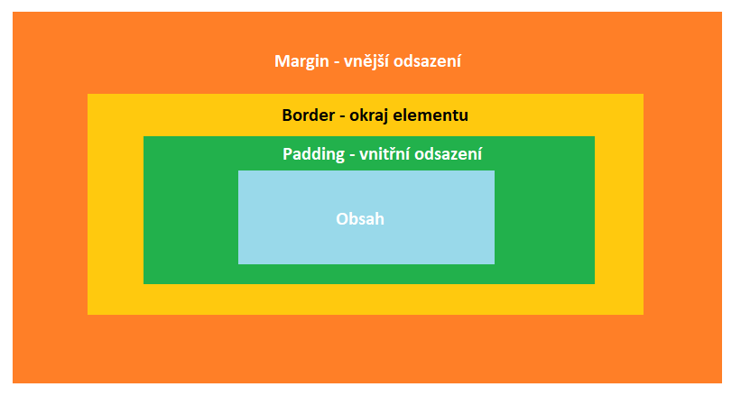

Struktura elementu
border
Vlastnost border nastavuje okraj elementu
Vlastnost border lze rozčlenit do několika vlastností:
- border-style - specifikuje druh okraje - dotted, dashed, solid, ridge, none...
- border-width - specifikuje tloušťku okraje - v px, em, cm...
- border-color - specifikuje barvu okraje - v rgb, rgba, hsl...
Dále lze rozdělit vlastnost border podle stran: (na tyto strany jde následně vázat předchozí vlastnosti např. border-top-style)
- border-top - horní okraj
- border-right - pravý okraj
- border-bottom - dolní okraj
- border-left - levý okraj
Pro zakulacení borderů slouží vlastnost border-radius - v px, %, em...
Editor
Pro živou ukázku je CSS a JavaScript vepsaný přímo v dokumentu - v praxi tyto soubory vždy oddělujte do externích souborů
<!DOCTYPE html>
<html>
<head>
<style>
div {
background: red;
width: 200px;
height: 200px;
border: 5px solid rgb(98, 76, 255);
border-radius: 8px;
border-top-left-radius: 62px;
border-bottom-right-radius: 24px;
}
</style>
</head>
<body>
<div>
</div>
</body>
</html>